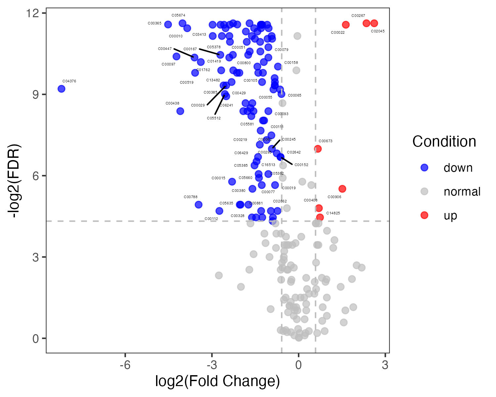
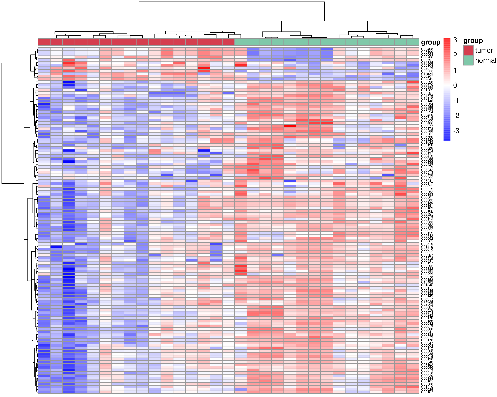
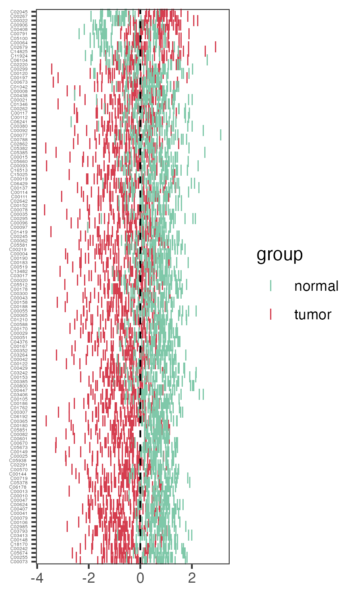
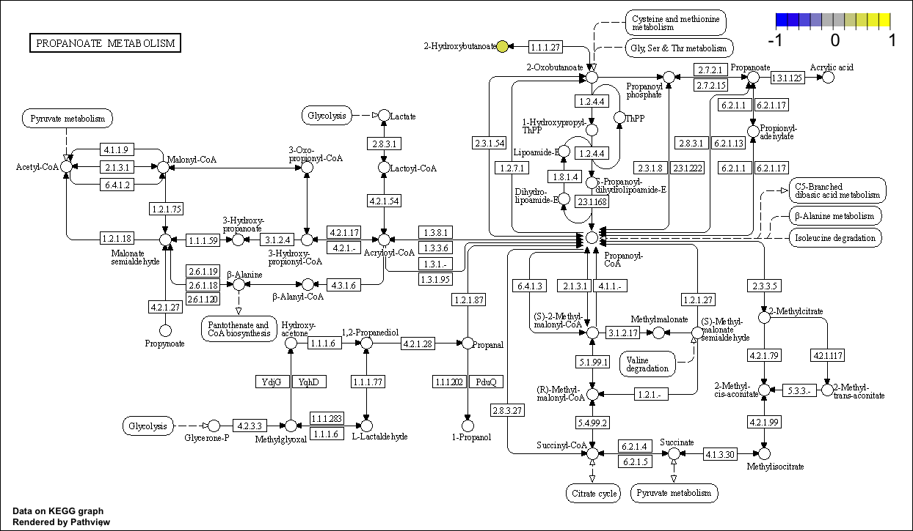

Rountine analysis
03-Routine_analysis.RmdMetabolite compound name transformation
Metabolite compound name transform to RefMet name
This step requires networking
RefMet: A Reference list of Metabolite names.The main objective of RefMet is to provide a standardized reference nomenclature for both discrete metabolite structures and metabolite species identified by spectroscopic techniques in metabolomics experiments.
library(MNet)
library(dplyr)
library(tibble)
library(survival)
compound_name <- c("2-Hydroxybutyric acid","1-Methyladenosine","tt","2-Aminooctanoic acid")
refmetid_result <- name2refmet(compound_name)##
## Attaching package: 'dplyr'## The following objects are masked from 'package:stats':
##
## filter, lag## The following objects are masked from 'package:base':
##
## intersect, setdiff, setequal, union## Input name refmet_name formula exactmass
## 1 1-Methyladenosine 1-Methyladenosine C11H15N5O4 281.1124
## 2 2-Hydroxybutyric acid 2-Hydroxybutyric acid C4H8O3 104.0473
## 3 tt tt <NA> NA
## 4 2-Aminooctanoic acid 2-Aminooctanoic acid C8H17NO2 159.1259
## super_class main_class sub_class class_index
## 1 Nucleic acids Purines Purine ribonucleosides 1330
## 2 Fatty Acyls Fatty acids Hydroxy FA 125
## 3 <NA> <NA> <NA> NA
## 4 Organic acids Amino acids and peptides Amino acids NAMetabolite compound name transform to KEGG ID
This step requires networking
Transform the metabolites compound name to KEGG ID
compound_name <- c("2-Hydroxybutyric acid","1-Methyladenosine","tt","2-Aminooctanoic acid")
keggid_result <- name2keggid(compound_name) %>%
tidyr::separate_rows(KEGG_id,sep=";") %>%
tibble::as_tibble()## name kegg_id
## 1 2-Hydroxybutyric acid C05984
## 2 1-Methyladenosine C02494
## 3 tt <NA>
## 4 2-Aminooctanoic acid <NA>Metabolite name corresponding to kegg pathway
This step requires networking
Search the kegg pathway corresponding to the metabolite name
compound_name <- c("2-Hydroxybutyric acid","1-Methyladenosine","tt","2-Aminooctanoic acid")
result_all <- name2pathway(compound_name)
##### Output is the each metabolite related pathway
result_name2pathway <- result_all$name2pathway
result_name2keggid <- result_all$kegg_id
result_name2enrichpathway <- result_all$pathway## name kegg_id PATHWAY pathwayid
## 1 2-Hydroxybutyric acid C05984 Propanoate metabolism hsa00640## name kegg_id
## 1 2-Hydroxybutyric acid C05984
## 2 1-Methyladenosine C02494
## 3 tt <NA>
## 4 2-Aminooctanoic acid <NA>## name nAnno nOverlap fc zscore pvalue adjp or CIl CIu
## 1 Propanoate metabolism 40 1 76.1 8.66 0.013 1 Inf 1.93 Inf
## distance namespace members_Overlap
## 1 1 Customised C05984
## members_Anno
## 1 C00024, C00042, C00068, C00083, C00091, C00099, C00100, C00109, C00111, C00163, C00186, C00222, C00424, C00479, C00546, C00583, C00683, C00804, C00827, C00894, C01013, C01213, C02170, C02225, C02335, C02876, C04225, C04593, C05235, C05668, C05979, C05983, C05984, C05989, C06002, C15972, C15973, C21017, C21018, C21250
## members_Overlap_name
## 1 2-Hydroxybutyric acid
## members_Anno_name
## 1 Acetyl-CoA;Succinate;Thiamin diphosphate;Malonyl-CoA;Succinyl-CoA;beta-Alanine;Propanoyl-CoA;2-Oxobutanoate;Glycerone phosphate;Propanoate;(S)-Lactate;3-Oxopropanoate;(S)-Lactaldehyde;Propanal;Methylglyoxal;Propane-1,2-diol;(S)-Methylmalonyl-CoA;Propynoate;Lactoyl-CoA;Propenoyl-CoA;3-Hydroxypropanoate;(R)-Methylmalonyl-CoA;Methylmalonate;2-Methylcitrate;beta-Alanyl-CoA;Propanoyl phosphate;(Z)-But-2-ene-1,2,3-tricarboxylate;(2S,3R)-3-Hydroxybutane-1,2,3-tricarboxylate;Hydroxyacetone;3-Hydroxypropionyl-CoA;Propane-1-ol;Propionyladenylate;2-Hydroxybutyric acid;3-Oxopropionyl-CoA;(S)-Methylmalonate semialdehyde;Enzyme N6-(lipoyl)lysine;Enzyme N6-(dihydrolipoyl)lysine;2-(alpha-Hydroxypropyl)thiamine diphosphate;Enzyme N6-(S-propyldihydrolipoyl)lysine;2-Methyl-trans-aconitateMetabolite KEGG ID transform to KEGG pathway
KEGG ID transform to KEGG pathway
library(MNet)## Warning: replacing previous import 'igraph::diversity' by 'vegan::diversity'
## when loading 'MNet'
keggid <- c("C05984","C02494")
##### the output is the each metabolite related pathway
keggpathway_result <- keggid2pathway(keggid)
head(keggpathway_result)## # A tibble: 1 × 5
## ENTRY NAME PATHWAY pathway_type V2
## <chr> <chr> <chr> <chr> <chr>
## 1 C05984 2-Hydroxybutanoic acid;///2-Hydroxybutyrate… Propan… Carbohydrat… hsa0…Pathway information
Get the gene and the metabolite in the pathway
library(MNet)
result <- pathwayinfo("hsa00630")
result <- pathwayinfo("Glyoxylate and dicarboxylate metabolism")
result$gene_info[1:2,]## type name kegg_pathwayid kegg_pathwayname
## 1 gene ACSS1 hsa00630 Glyoxylate and dicarboxylate metabolism
## 2 gene ACSS2 hsa00630 Glyoxylate and dicarboxylate metabolism
## kegg_category
## 1 Carbohydrate metabolism
## 2 Carbohydrate metabolism
result$compound_info[1:2,]## type name kegg_pathwayid kegg_pathwayname
## 1 metabolite C00007 hsa00630 Glyoxylate and dicarboxylate metabolism
## 2 metabolite C00011 hsa00630 Glyoxylate and dicarboxylate metabolism
## kegg_category
## 1 Carbohydrate metabolism
## 2 Carbohydrate metabolismPathway name transform to pathway id
Transform the KEGG pathway name to KEGG pathway ID
library(MNet)
pathwayid <- pathway2pathwayid("Glycolysis / Gluconeogenesis")
pathwayid## PATHWAY pathwayid
## 1 Glycolysis / Gluconeogenesis hsa00010Group-wise analyses
Differnetial metabolite analysis
Function ‘mlimma’
diff_result <- mlimma(meta_dat,group)Differential metabolites’ volcano
Volcano plot of metabolites using the function “pVolcano”
p_volcano <- pVolcano(diff_result,foldchange_threshold=1.5)
Differential metabolites’ heatmap
Heatmap plot of differentital metabolites using the function “pHeatmap”
meta_dat_diff <- meta_dat[rownames(meta_dat) %in% diff_result_filter$Name,]
p_heatmap <- pHeatmap(meta_dat_diff,group,fontsize_row=5,fontsize_col=4,clustering_method="ward.D",clustering_distance_cols="correlation")
Differential metabolites’ zscore
Zscore plot of differentital metabolites using the function “pZscore”
p_zscore <- pZscore(meta_dat_diff,group,ysize=3)
#p_zscore
Feature selection
Random Forest
Using machine learning “Random Forest” for feature selection
result_ML_RF <- ML_RF(meta_dat1)
result_ML_RF$p
result_ML_RF$feature_resultXGBoost
Using machine learning ” XGBoost” for feature selection
result_ML_xgboost <- ML_xgboost(meta_dat1)
result_ML_xgboost$p
result_ML_xgboost$feature_resultLASSO
Using machine learning “LASSO” for feature selection
result_ML_lasso <- ML_alpha(meta_dat1,method="lasso")elastic network
Using machine learning “elastic network” for feature selection
result_ML_elastic <- ML_alpha(meta_dat1,method="elastic")Pathway analysis
Pathview only metabolites
kegg_id <- c("C02494","C03665","C01546","C05984","C14088","C00587")
value <- c(-0.3824620,0.1823628,-1.1681486,0.5164899,1.6449798,-0.7340652)
names(value) <- kegg_id
cpd.data <- value
gene_name <- c("LDHA","BCKDHB","PCCA","ACSS1")
gene_value <- c(1,0.5,-1,-1)
names(gene_value) <- gene_name
pPathview(cpd.data,outdir="result_v0131")
Pathview contains metabolites and genes
pPathview(cpd.data=cpd.data,gene.data=gene_value,outdir="result_v0131")
Clinical analysis
Time series of clinical
Column contains the time, group, clinical index(such as ALT), low and high
clinical_index[1:5,]
time_series_ALT <- pCliTS(clinical_index,"ALT")
ggsave("result_v0131/clinical_time_series.png",time_series_ALT,width=5,height = 4)
Metabolites’ survival plot
metabolites <- c("C03819","C02918","C03916")
survMet(dat_surv,metabolites,cluster_method="mean",out_dir="result_v0131/survival/")
Cox analysis
result <- MetCox(dat_surv)Session information
## R version 4.2.1 (2022-06-23)
## Platform: x86_64-apple-darwin17.0 (64-bit)
## Running under: macOS Catalina 10.15.6
##
## Matrix products: default
## BLAS: /Library/Frameworks/R.framework/Versions/4.2/Resources/lib/libRblas.0.dylib
## LAPACK: /Library/Frameworks/R.framework/Versions/4.2/Resources/lib/libRlapack.dylib
##
## locale:
## [1] en_US.UTF-8/en_US.UTF-8/en_US.UTF-8/C/en_US.UTF-8/en_US.UTF-8
##
## attached base packages:
## [1] stats graphics grDevices utils datasets methods base
##
## other attached packages:
## [1] MNet_1.0.0 dplyr_1.1.1
##
## loaded via a namespace (and not attached):
## [1] tidyselect_1.2.0 xfun_0.38 bslib_0.4.2
## [4] purrr_1.0.1 splines_4.2.1 lattice_0.21-8
## [7] colorspace_2.1-0 vctrs_0.6.1 generics_0.1.3
## [10] htmltools_0.5.5 mgcv_1.8-42 yaml_2.3.7
## [13] utf8_1.2.3 rlang_1.1.0 e1071_1.7-13
## [16] pkgdown_2.0.7 jquerylib_0.1.4 pillar_1.9.0
## [19] withr_2.5.0 glue_1.6.2 BiocGenerics_0.42.0
## [22] lifecycle_1.0.3 stringr_1.5.0 munsell_0.5.0
## [25] gtable_0.3.3 ragg_1.2.5 memoise_2.0.1
## [28] evaluate_0.20 Biobase_2.56.0 knitr_1.42
## [31] permute_0.9-7 fastmap_1.1.1 parallel_4.2.1
## [34] class_7.3-21 fansi_1.0.4 scales_1.2.1
## [37] cachem_1.0.7 vegan_2.6-4 desc_1.4.2
## [40] jsonlite_1.8.4 systemfonts_1.0.4 fs_1.6.1
## [43] textshaping_0.3.6 ggplot2_3.4.2 digest_0.6.31
## [46] stringi_1.7.12 bookdown_0.33 rprojroot_2.0.3
## [49] grid_4.2.1 cli_3.6.1 tools_4.2.1
## [52] magrittr_2.0.3 sass_0.4.5 proxy_0.4-27
## [55] tibble_3.2.1 cluster_2.1.4 pkgconfig_2.0.3
## [58] Matrix_1.5-4 MASS_7.3-58.3 data.table_1.14.8
## [61] rmarkdown_2.21 rstudioapi_0.14 R6_2.5.1
## [64] nlme_3.1-162 igraph_1.4.2 compiler_4.2.1